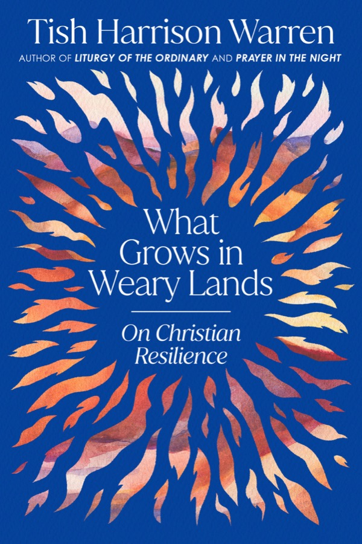

An Anglican priest and former New York Times columnist, burned out and spiritually dry, goes looking for help among the 4th-century Desert Fathers and Mothers, and finds that faith grows less like a sudden blaze than a fire tended log by log.
8 chapters1 celldesert wisdom2026

The big idea
The steady laying on of the logs
The book opens at a cold retreat centre in the Texas Hill Country. Warren, who had a dream job writing weekly for the New York Times, a church, a book deal and three kids, had come because she was empty: running on adrenaline, God felt distant. She tried to light a fire. Match after match flared and died.
On the drive there, her first editor Marcia had told her that faith and art both grow not in sudden bursts but in "the steady laying on of the logs". Warren kept piling kindling for what felt like hours. Then one match caught, and all that wasted-seeming tinder fed the blaze.
That's the book's image. Warren grew up in youth groups that sang about being "on fire" for Jesus. But what about the times the fire won't start? Her answer: faith practices that feel futile are kindling. You can't force the flame. You can keep tending, and trust that nothing is wasted.
Her guides are the Desert Fathers and Mothers, thousands of mostly nameless men and women who left the cities of the 3rd and 4th centuries for the deserts of Egypt, Syria and Palestine. They lived simply, prayed the Psalms and wove baskets: ora et labora, prayer and work. Odd, extreme, sometimes funny, they knew weariness from the inside.
Three ways through a weary season
"Numb out, flame out, or go deep" is a phrase Warren and her husband Jonathan use in hard moments. A friend who is a spiritual director told her she couldn't simply white-knuckle through the season: she had to find what God was inviting her into.
4th c.
When thousands of desert monks lived in caves and huts in Egypt, Syria and Palestine.
8
"Bad thoughts" the desert monks listed. Acedia, a restless listlessness, was the hardest to resist.
5
US states the Warrens moved between in their first fifteen years of marriage, always chasing the next thing.
The desert, in Stanley Hauerwas' phrase that Warren borrows, is where you learn how to go on when you don't know where you are.
1Discovery in the Desert
Faith for the long haul, not the big moment
If the Christian life were a constant rock concert, Paul wouldn't have needed to tell us not to grow weary in doing good.
Years earlier, Warren turned down a book on burnout: surely it just comes down to Sabbath, friends and sleep? Then she did all three and still felt lost, and everyone around her seemed to as well.
American revivalism prizes the moment of decision, and now the dramatic "deconversion" story too. Both are about one big moment. A seminary professor she knows aims instead to give students tools to still follow Jesus at eighty.
Dry seasons aren't detours. They're where something grows that only grows there, if we don't miss the gift.
2Stay in Your Cell
"Your cell will teach you everything"
Abba Moses' advice to a struggling monk: go back, sit down, stay. The cell is wherever your actual life is.
Acedia. Warren describes picketing her own front yard with a sign demanding ease, now and forever: resenting calling her mum back, her child's endless story, a sermon, her inbox. The desert monks named this listless restlessness acedia, the meanest temptation.
Feelings follow practice. The writer Jen Pollock Michel told a conference that we fear "performativity", so we favour the feelings of faith over its habits. But what about when moods and motions drift apart? Warren's answer: keep the motions.
The trade enters the body. French craftsmen said this when an apprentice got hurt or tired. Eugene Peterson: you can't command your heart, but you can lift your hands. Warren's Anglican liturgy holds people who no longer know how to pray.
"I was here." In the Life of Antony, the monk is beaten by demons and asks God where he was. The answer: here, watching you struggle.
Warren and Jonathan say it to each other constantly: a terrible fight with their teenager, a hard church conversation, a week of doubt, "just stay in the cell".
The phrase she prays
From an old story about a monk who kept going: by God's help he went on little by little until he became what he was meant to become. His cell taught him everything.
3Pledge Your Body to the Walls
Stuck can be holy
The commitments that hem us in, the people, promises and places, are the scaffolding where love learns to be patient.
The Warrens moved five times in fifteen years: seminary, a PhD, jobs, family. It trained them to look for the next change to fix life's problems.
As a young adult she feared feeling stuck. Now she thinks it's inevitable and important, often around midlife, when earlier choices seem to wall us in.
You can flee your cell without moving: through nostalgia for zealous college days, or fantasies about other jobs, places and husbands. Grace only meets us in the present tense.
Artist-mothers laughed at a writer's claim that real artists must escape to a cabin in the woods. Warren's "cell" is her chaotic kitchen table.
Another Antony story: bored and irritable, he asks God for healing, then sees an angel outside doing exactly what he does each day, working and praying. "Do this and you will be cured."
Part two · Chapters 4–6
What keeps the fire going
Staying isn't grim endurance. Warren names three things that sustain it: hope, grace and silence.
4Wait in the Womb
Cheerful seriousness
Christian resilience isn't Stoicism. It's hope, practised together, in a world that really is dark.
Not stoic. Taylor Swift's "I Can Do It with a Broken Heart" is a catchy anthem of performing while miserable and telling no one. Ryan Holiday calls it modern Stoicism. Warren respects it but sees something else in the desert: they stayed because God himself waited in the cell.
Cheerful seriousness. C. S. Lewis told a doubting correspondent to keep seeking with "cheerful seriousness". Serious about the darkness, cheerful because Christ has overcome the world.
Hope is communal. When we're tired, we can't hope alone. That means showing up to church and answering honestly when someone asks how your week was. Hope doesn't grow by pretending.
The womb. Amma Syncletica compared this life to a second womb: dark, limited, but never wasted, a place of growth before birth into light. Warren remembers pregnancies where she searched for any sign that something was happening.
5Relax the Bow
Bend the bow, don't break it
The desert monks were rigorous, yet their effort was a response to grace, not a way to earn it.
The hunter's bow. A hunter was shocked to see Antony relaxing with the monks. Antony asked him to draw his bow further and further, until the hunter said it would snap. So it is with God's work, said Antony: push to excess and people break.
Reading that a "true monk" hates all bodily comfort, Warren kept sipping her latte. But beneath the austerity she found gentleness: they didn't think everything rested on their shoulders.
Only when we know God is gentle can we risk doing things badly and see what he makes of our feeble efforts.
A covenant with limits. A desert saying: we get nowhere because we don't know our limits. Strivers are ashamed of limits. Resilience needs rest and help, like a bow that is sometimes unstrung.
When we fail. Staying in the cell means seeing ourselves honestly, like a shoplifter caught on camera: resentment, scrolling, pettiness. Grace re-establishes us day by day.
The duty of delight. Dorothy Day lived among the poor, the mentally ill and addicts in New York, and still savoured sunlight, Dostoevsky and steam from coffee: hints of resurrection.
6Let the Silt Settle
Murky water clears when you stop stirring
Much of our exhaustion isn't personal failure. It's swimming against a culture of "total work".
The story · three monks
One monk made peace between quarrelling people; another visited the sick; a third withdrew into solitude. The first two grew weary and discouraged and went to see the third. He poured water into a cup: it was murky. After they sat a while, the silt settled and the water turned clear. So it is in a crowd, he said: the turbulence keeps you from seeing your own faults; in quiet you finally see them. Warren admits she wants to argue with the story, and that's why it intrigues her.
Philosopher Josef Pieper warns of a world of "total work" where leisure feels immoral. The Greek skole, leisure, gives us the word school: leisure is spaciousness, not piña coladas.
In her driest time Warren craved silence, yet when she finally had a free hour, her twitchy brain reached for her phone. Stillness has to be relearned.
A 5th-century monk: leave the door of a steam bath open and the heat escapes, and so does the soul's memory of God through constant talking. Friends staged an "intervention" that got her off social media.
Part three · Chapters 7–8
Brace the wall
Warren calls herself a born doubter: every few months she lies awake asking whether any of it is real. Doubt doesn't end faith, but it does need bracing.
7Brace the Wall
You can only practise a faith
Andy Crouch: you can't practise your doubts. Everyone lives by some set of beliefs about what's true.
Two kinds of doubt
Honest limits
We are small and can't know everything
Mystery is part of beauty
Conversion is lifelong, again and again
"Spirit of blasphemy"
John of the Cross' term
Not "is there a God?" but "can he be trusted?"
Her medicine: a steady dose of Psalms
What braces the wall
The PsalmsRage and weep at a silent sky, then return to a love that doesn't fail, sometimes in the same prayer.
The church across timeNo doubt, pain or scandal is new; others have faced it and kept going.
People near youWho are the believers who make you want to believe? Stay close to them.
She once imagined Christianity as just "me and Jesus", skipping two thousand years. But we can't generate a sustaining faith alone. On weeks she can barely come, her church hands her bread and wine anyway, and maybe next week she'll do the same for them.
8All Smoke, All Flame
The desert, at last, will bloom
Perseverance is the condition of growth in anything. We won't understand mile one until mile one thousand.
At 83, the cellist Pablo Casals still practised four or five hours a day, because he thought he was making progress.
Oliver Burkeman tells Ezra Klein that burnout includes a lack of meaning: working ever harder without ever reaching the moment of control. The end for mortals isn't control; it's death. Warren watches her fifteen-minute hourglass drain each morning.
On a train from Los Angeles to Austin, she expected wasteland and saw yucca, prickly pear, saguaros: life everywhere in the desert. Dormant isn't dead.
The ending · ten lamps of fire
Abba Lot tells Abba Joseph he keeps his small office of prayer, fasts a little, prays and lives in peace as far as he can: what else? The old man raises his hands; his fingers become like ten lamps of fire. "If you will, you can become all flame." Warren reads it not as a contradiction of the small habits, but as where they lead.
Practice
Tending the fire
The book's practices, gathered from the desert and from Warren's own kitchen table.
Stay
"Just stay in the cell"When doubt, conflict or boredom hits, keep the next small practice.
Let the body leadKneel, lift your hands, pray the liturgy even when the heart lags.
Watch for fantasyNostalgia and "if only" are ways of leaving without moving.
Hope and grace
Tell the truth at churchNot "fine". Let someone carry this with you.
Make a covenant with limitsRest, ask for help, unstring the bow.
The duty of delightNotice small beauties on purpose, like Dorothy Day.
Silence
A daily hourglassFifteen minutes of silence, even when the mind thrashes.
Close the steam-bath doorCut back the constant talk, online and off.
Let the silt settleWithdraw in rhythm, so you see clearly again.
When doubting
Pray the PsalmsThey teach you to lament and return.
Find your peopleWhose faithfulness makes you want to be faithful?
Practise a faithYou'll live by some belief anyway; choose which one to practise.